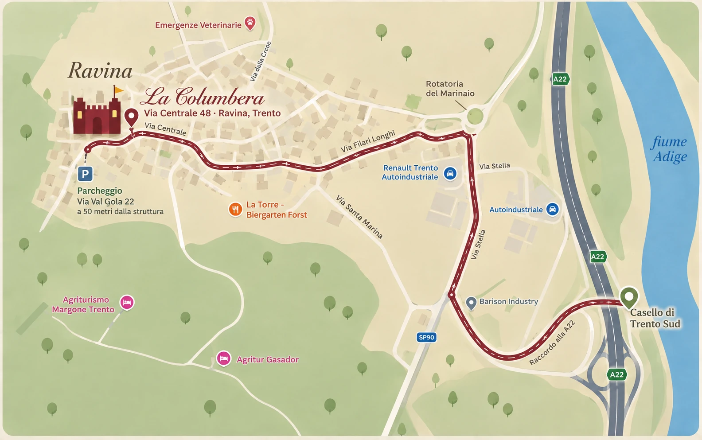

In auto
Autostrada A22 del Brennero, uscita Trento Sud. Seguite indicazioni per Ravina — la struttura è a circa 5 minuti dall'uscita. Parcheggio in Via Val Gola 22.
La Columbera è a Ravina, in Via Centrale 48 a Trento, a soli 5 minuti dall'uscita autostradale Trento Sud dell'A22 del Brennero. Il parcheggio della struttura è in Via Val Gola 22, a 50 metri.

Autostrada A22 del Brennero, uscita Trento Sud. Seguite indicazioni per Ravina — la struttura è a circa 5 minuti dall'uscita. Parcheggio in Via Val Gola 22.
Stazione ferroviaria di Trento. Dalla stazione, i bus urbani 12 e 14 portano a Ravina — vedi la sezione dedicata qui sotto — oppure taxi (10 minuti).
Aeroporto di Verona Villafranca (~1h), Bergamo o Venezia (~2h). Collegamento diretto in treno per Trento.
Ravina è collegata al centro di Trento e alla stazione dalle linee urbane di Trentino Trasporti. La fermata di riferimento è Ravina (chiesa / piazza), a due minuti a piedi dalla dimora.
 Urbana
UrbanaIl collegamento principale con il centro: da Piazza Dante e dalla stazione ferroviaria di Trento fino a Ravina e Romagnano, con passaggi frequenti nei giorni feriali.
L'altra linea urbana che serve Ravina: dal centro di Trento, passando per via Sanseverino, fino a Ravina e poi verso il Belvedere.
Dalle fermate di Ravina e Romagnano partono anche i collegamenti extraurbani verso la Valle dei Laghi e gli altopiani: comodi per una gita senza auto.
Orari e avvisi. Gli orari cambiano tra feriale, sabato e festivo e possono subire variazioni: prima di partire consultate sempre gli orari ufficiali e gli avvisi di servizio di Trentino Trasporti — oppure chiedeteci al check-in, vi aiutiamo volentieri.